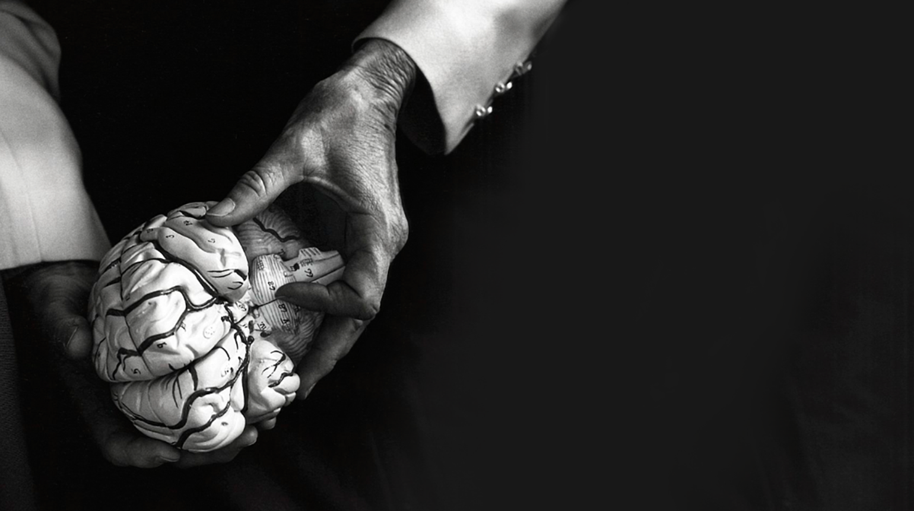

UNTITLED, 1964, BY JAMES FLORA
Courtesy of the heirs of James Flora and JimFlora.comThe fundamental questions from Plato onwards are these: How is it possible for us to represent reality? How is it that we can represent the external world of objects, of space and time, of motion and color? How do we represent the inner world of thought and desire, images and ideas, self and consciousness? Where do moral values come from? Since it is after all the nervous system that achieves these things, the fundamental question can be reformulated thus: How does the brain situated in its bodily configuration, within its surrounding physical environment, and within the social context it finds itself–how does the brain work?
The human brain is, of course, a product of biological evolution, and as we increasingly appreciate, evolution is remarkably conservative. Our brains are very similar in organization, neuronal components, and neurochemicals to the brains of chimpanzees, monkeys, rodents, and even in basic ways, to those of reptiles and fruit flies. Looked at from an evolutionary point of view, the principal function of nervous systems is to enable the organism to move so as to succeed at the Four F’s: feeding, fleeing, fighting, and reproduction. We cannot expect engineering perfection in the products of evolution. Improvements to a nervous system are not built by starting from scratch, but are modifications and extensions of what already exists. If we approach the problems of nervous system function strictly as engineering problems, setting our goals to figure out how a task could in principle be done, we may find a cunning solution that is nothing like what evolution has actually found. Unless we go into the black box, we risk wasting our time exploring remote, if temporarily fashionable, areas of computational space. Based on “Epistemology in the Age of Neuroscience”, Journal of Philosophy 1987
For decades, Patricia Churchland has contributed to the fields of philosophy of neuroscience, philosophy of the mind and neuroethics. Her research has centered on the interface between neuroscience and philosophy with a current focus on the association of morality and the social brain. A Professor Emeritus of Philosophy at the University of California, San Diego and Adjunct Professor at the Salk Institute, Pat holds degrees from Oxford University, the University of Pittsburg and the University of British Columbia. She has been awarded the MacArthur Prize, The Rossi Prize for Neuroscience and the Prose Prize for Science. She has authored multiple pioneering books, her most recent being Touching a Nerve. She has served as President of the American Philosophical Association and the Society for Philosophy and Psychology. Pat lives in Solana Beach, California, with her husband Paul, a neurophilosopher, and their labradoodle Millie. They have two children, Anne and Mark, both neuroscientists.
Academic Awards and Grants
- Rossi Prize in Neuroscience Pavia, Italy 2008
- Honorary Doctor of Law University of Alberta, 2007
- Presidential Chair in Philosophy 1999-Present
- Honorary Doctor of Letters University of Victoria, 1996
- Academy of Humanism1993
- MacArthur Foundation Research Fellow 1991-96
- James S. McDonnell Research Grant 1989-90
- James S. McDonnell Research Grant 1988-89
- Chancellor’s Associate Award University of California, San Diego 1988
- Faculty Research Lecture Award University of California, San Diego 1988
- National Science Foundation Research Grant 1987-89
Conscience – The Origins of Moral Intuition
On first impulse, the word “conscience” seems most easily defined as an innate knowledge of right and wrong. But if we think about the term more deeply, questions quickly arise. For instance, what one group defines as “right” is readily dismissed by another as “wrong.” Provocative, timely, and profound, Conscience is an upending examination of the roots behind our moral beliefs. With wisdom and unflinching scientific and philosophical insight, Patricia Churchland has written an eye-opening book that may seriously challenge everything we thought we knew about our best behavior.
Nicholas A. Chistakis, Nature
“What is our conscience, and where does it come from? In her highly readable Conscience, the philosopher Patricia Churchland argues that “we would have no moral stance on anything unless we were social”. Conscience is illuminating, entertaining and wise.” Read full review here .
Publishers Weekly
“In this fascinating work, Churchland…argues that human conscience is neurobiological in origin, rather than stemming, as contemporary philosophers commonly maintain, from universal moral laws. This intellectually rigorous yet highly readable work is well worth the time of anyone interested in why humans feel and think as they do.”
Kirkus Reviews
“To what extent is conscience shaped by the social world? What accounts for similarities of cooperation and sharing in human behavior? What accounts for psychopathology and for the disdain for honesty, kindness, and decency displayed by some celebrities and politicians? No discipline provides a complete answer to these formidable questions, but Churchland gleans insights from all… A thoughtful, accessible, and enlightening book.”
Books
Conscience: The Origins of Moral Intuition
Patricia S. Churchland New York: Norton, 2019Touching a Nerve: The Self as Brain
Patricia S. Churchland Norton, 2013Braintrust: What Neuroscience Tells Us About Morality
Patricia S. Churchland Princeton University Press, 2011The Computational Brain
Patricia S. Churchland Terrence J. Sejnowski The MIT Press, 1992Neurophilosophy: Toward a Unified Science of the Mind-Brain
Patricia S. Churchland The MIT Press, 1986On the Contrary: Critical Essays, 1987-1997
Paul M. Churchland, Patricia S. Churchland The MIT Press, 1998The Churchlands and Their Critics
ed. Robert N. McCauley Wiley-Blackwell, 1996Brain-Wise: Studies in Neurophilosophy
Patricia S. Churchland The MIT Press, 2002The Mind-Brain Continuum: Sensory Processes
Rodolfo Llinás, Patricia S. Churchland The MIT Press, 1996On the Churchlands
William Hirstein Wadsworth, 2004Contact
pat@patriciachurchland.comThere really isn't a special thing called the mind. The mind just is the brain.
